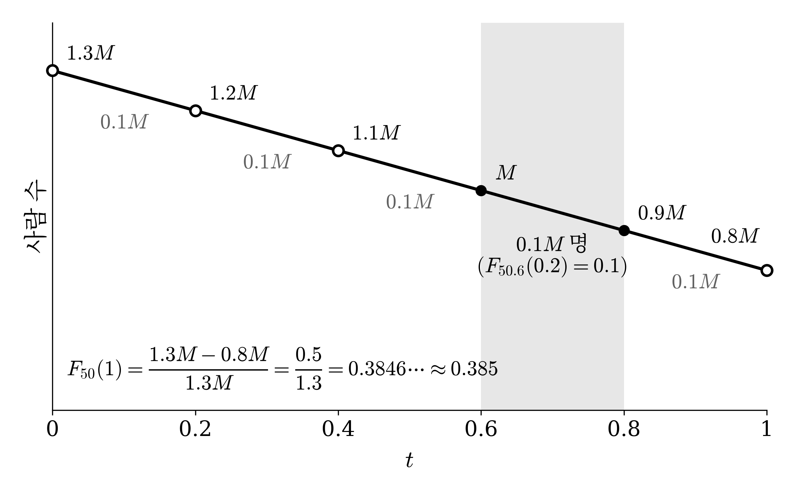
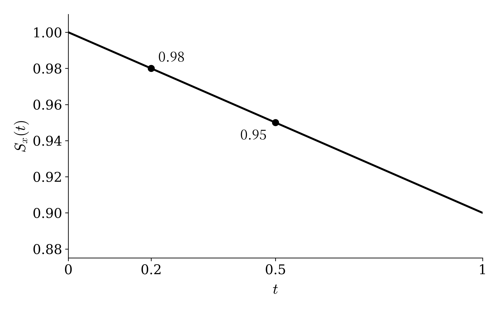
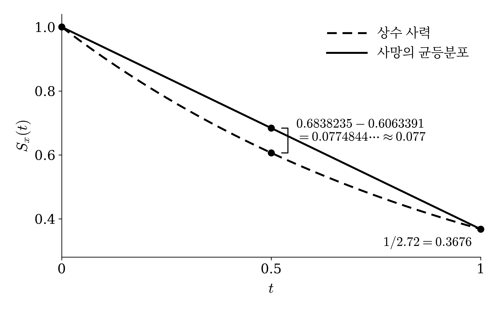
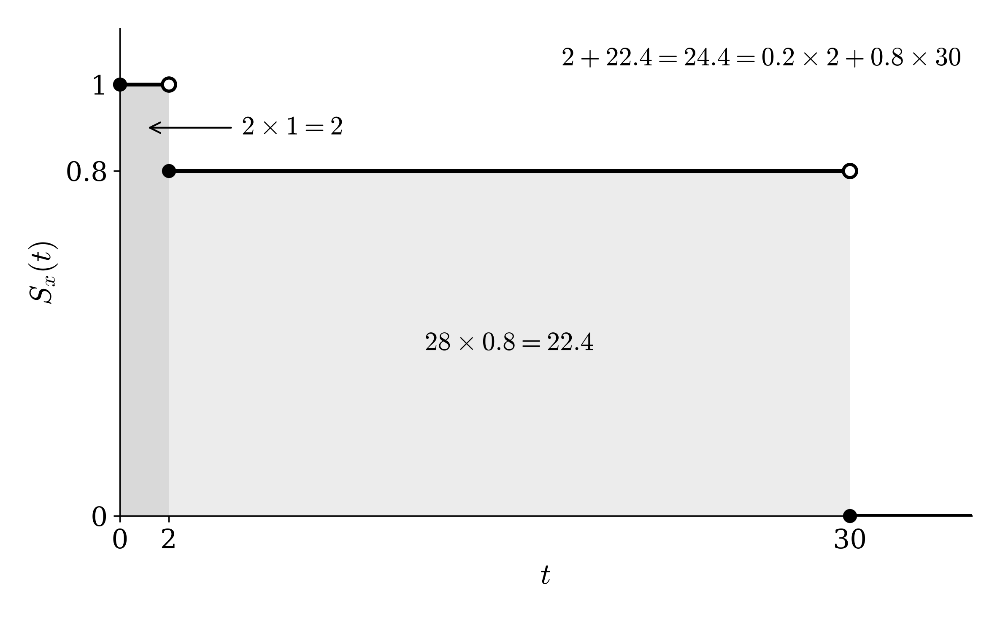
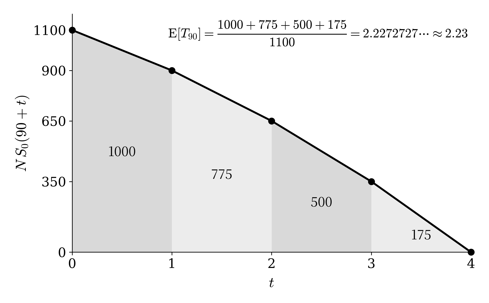

12wk-1: 계리사 기출문제 풀이 (4)
1. 강의영상
2. 기출문제
# 예제 1 (2020 1차 39번) 다음 두 조건을 만족하는 \(F_{50}(1)\) 의 값을 구하시오.
(가) \(F_{50.6}(0.2) = 0.1\)
(나) 연령 \([x, x+1)\) 에서 단수부분에 대해 사망자 수가 균등분포(UDD)를 따름
① 0.370 ② 0.375 ③ 0.380 ④ 0.385
(풀이1) 구하는 것은 \(F_{50}(1)\) 이고, 이것을 \(q\) 라 하자. (가) 의 \(F_{50.6}(0.2)\) 를 \(q\) 로 쓴다.
\[ \begin{aligned} &F_{50.6}(0.2) = 1 - S_{50.6}(0.2) \\ &\quad = 1 - \frac{S_{50}(0.8)}{S_{50}(0.6)} \quad (\because S_{50}(0.8) = S_{50}(0.6)\,S_{50.6}(0.2)) \\ &\quad = 1 - \frac{1 - 0.8q}{1 - 0.6q} \quad (\because \text{UDD: } S_{50}(t) = 1 - t\,q) \\ &\quad = \frac{0.2q}{1 - 0.6q} \end{aligned} \]
(가) 에서 이것이 \(0.1\) 이므로 \(0.2q = 0.1 - 0.06q\), 곧 \(0.26q = 0.1\) 이고 \(q = \dfrac{0.1}{0.26} = 0.3846153\cdots \approx 0.385\).
(풀이2)

답: ④ 0.385
다음 두 조건을 만족하는 \(q_{50}\)의 값을 구하시오.
(가) \({}_{0.2}q_{50.6} = 0.1\)
(나) 연령 \([x, x+1)\)에서 단수부분에 대해 사망자 수가 균등분포(UDD)를 따름.
① 0.370 ② 0.375 ③ 0.380 ④ 0.385
시험지의 기호
| 시험지 | 뜻 | 우리 기호 |
|---|---|---|
| \({}_tq_x\) | \(x\) 세인 사람이 \(t\) 년 안에 죽을 확률 | \(F_x(t) = \Pr(T_x \le t)\) |
| \(p_x\) · \(q_x\) | 기간이 1년이면 왼쪽 아래첨자를 뗀다. \(p_x = {}_1p_x\), \(q_x = {}_1q_x\) | \(S_x(1)\) · \(F_x(1)\) |
| UDD | 사망의 균등분포(uniform distribution of deaths). 시험지는 단수부분에 대해 사망자수가 균등하게 분포한다고 쓴다 | \(F_x(t) = t\,F_x(1)\) (\(x\) 는 정수, \(0 \le t \le 1\)) |
#
# 예제 2 (2022 1차 28번) \(F_x(1) = 0.1\) 이고 UDD (\(F_x(t) = t \cdot F_x(1)\), \(x\) 는 정수, \(0 \le t \le 1\)) 를 가정할 때, \(S_x(0.2) - S_x(0.5)\) 를 구하시오.
① 0.020 ② 0.025 ③ 0.030 ④ 0.035
(풀이1)
\[ \begin{aligned} &S_x(0.2) - S_x(0.5) = \{1 - F_x(0.2)\} - \{1 - F_x(0.5)\} = F_x(0.5) - F_x(0.2) \\ &\quad = 0.5\,F_x(1) - 0.2\,F_x(1) \quad (\because \text{UDD}) \\ &\quad = 0.3 \times 0.1 = 0.03 \end{aligned} \]
(풀이2) 그림으로 푼다.

답: ③ 0.030
\(q_x = 0.1\) 이고 UDD (\({}_tq_x = t \cdot q_x\), \(x\) 는 정수, \(0 \le t \le 1\)) 를 가정할 때, \({}_{0.2\vert 0.3}q_x\) 를 구하시오.
① 0.020 ② 0.025 ③ 0.030 ④ 0.035
시험지의 기호
| 시험지 | 뜻 | 우리 기호 |
|---|---|---|
| \({}_tq_x\) | \(x\) 세인 사람이 \(t\) 년 안에 죽을 확률 | \(F_x(t) = \Pr(T_x \le t)\) |
| \(p_x\) · \(q_x\) | 기간이 1년이면 왼쪽 아래첨자를 뗀다. \(p_x = {}_1p_x\), \(q_x = {}_1q_x\) | \(S_x(1)\) · \(F_x(1)\) |
| \({}_{u\vert t}q_x\) | \(x\) 세인 사람이 \(u\) 년은 살고 그다음 \(t\) 년 안에 죽을 확률. \(t = 1\) 이면 \({}_{u\vert}q_x\) 로 쓴다 | \(S_x(u) - S_x(u+t) = \Pr(u < T_x \le u+t)\) |
#
# 예제 3 (2019 1차 38번) 다음 조건 하에서 \(F_x^{\text{CFM}}(0.5) - F_x^{\text{UDD}}(0.5)\) 를 구하시오. (단, \(e = 2.72\))
(가) \(x\) 는 정수 연령이고 \(S_x(1) = e^{-1}\)
(나) \(F_x^{\text{CFM}}(t)\) 는 연령 \([x, x+1)\) 에서 단수 부분에 대해 사력이 일정하다(CFM)고 가정할 때 \((x)\) 가 \(t\) 년 이내에 사망할 확률
(다) \(F_x^{\text{UDD}}(t)\) 는 연령 \([x, x+1)\) 에서 단수 부분에 대해 사망자 수의 균등분포(UDD)를 가정할 때 \((x)\) 가 \(t\) 년 이내에 사망할 확률
① 0.055 ② 0.077 ③ 0.099 ④ 0.122
(풀이1) 구하는 것은 \(F_x^{\text{CFM}}(0.5) - F_x^{\text{UDD}}(0.5)\) 이다. 둘을 따로 구한다.
\[ \begin{aligned} &F_x^{\text{CFM}}(0.5) = 1 - S_x(0.5) \\ &\quad = 1 - S_x(1)^{0.5} \quad (\because \text{CFM: } S_x(t) = S_x(1)^t) \\ &\quad = 1 - e^{-0.5} = 1 - \frac{1}{\sqrt{2.72}} = 0.3936609\cdots \quad (\because \text{(가)}, \ e = 2.72) \end{aligned} \]
\[ \begin{aligned} &F_x^{\text{UDD}}(0.5) = 0.5\,F_x(1) \quad (\because \text{UDD: } F_x(t) = t\,F_x(1)) \\ &\quad = 0.5\,(1 - e^{-1}) = 0.5\left(1 - \frac{1}{2.72}\right) = 0.3161764\cdots \quad (\because \text{(가)}) \end{aligned} \]
따라서 구하는 값은 \(0.3936609\cdots - 0.3161764\cdots = 0.0774844\cdots \approx 0.077\).
(풀이2)

답: ② 0.077
다음 조건 하에서 \({}_{0.5}q_x^{CFM} - {}_{0.5}q_x^{UDD}\)를 구하시오. (단, \(e = 2.72\))
(가) \(x\)는 정수 연령이고 \(p_x = e^{-1}\)
(나) \({}_tq_x^{CFM}\)은 연령 \([x, x+1)\)에서 단수 부분에 대해 사력이 일정하다(CFM)고 가정할 때 \((x)\)가 \(t\)년 이내에 사망할 확률
(다) \({}_tq_x^{UDD}\)는 연령 \([x, x+1)\)에서 단수 부분에 대해 사망자 수의 균등분포(UDD)를 가정할 때 \((x)\)가 \(t\)년 이내에 사망할 확률
① 0.055 ② 0.077 ③ 0.099 ④ 0.122
시험지의 기호
| 시험지 | 뜻 | 우리 기호 |
|---|---|---|
| \({}_tq_x\) | \(x\) 세인 사람이 \(t\) 년 안에 죽을 확률 | \(F_x(t) = \Pr(T_x \le t)\) |
| \(p_x\) · \(q_x\) | 기간이 1년이면 왼쪽 아래첨자를 뗀다. \(p_x = {}_1p_x\), \(q_x = {}_1q_x\) | \(S_x(1)\) · \(F_x(1)\) |
| UDD | 사망의 균등분포(uniform distribution of deaths). 시험지는 단수부분에 대해 사망자수가 균등하게 분포한다고 쓴다 | \(F_x(t) = t\,F_x(1)\) (\(x\) 는 정수, \(0 \le t \le 1\)) |
| CFM | 단수부분에 사력이 일정하다(constant force of mortality) | \(S_x(t) = S_x(1)^t\) (\(x\) 는 정수, \(0 \le t \le 1\)) |
#
# 예제 4 (2023 1차 35번) 다음의 생명표에서 \(S_{10}(2)\) 를 구하시오.
| \(t\) | \(N\,S_0(t)\) | \(N\,(S_0(t) - S_0(t+1))\) | \(\dfrac{S_0(t+1)}{S_0(t)}\) |
|---|---|---|---|
| 10 | 70 | ||
| 11 | 0.98 | ||
| 12 | 810 |
① 0.9219 ② 0.9175 ③ 0.9140 ④ 0.9035
(풀이) 구하는 것은 \(S_{10}(2)\) 다.
\[ S_{10}(2) = \frac{N S_0(12)}{N S_0(10)} = \frac{810}{N S_0(10)} \qquad \left(\because S_{10}(2) = \frac{S_0(12)}{S_0(10)}\right) \]
따라서 \(N S_0(10)\) 을 구한다. 11세 줄의 \(S_{11}(1) = 0.98\) 은 11세까지 산 사람 가운데 12세까지 사는 비율이다.
\[ \begin{aligned} &N S_0(11) = \frac{N S_0(12)}{S_{11}(1)} = \frac{810}{0.98} = 826.5306\cdots \\ &N S_0(10) = N S_0(11) + N\,(S_0(10) - S_0(11)) = 826.5306\cdots + 70 = 896.5306\cdots \end{aligned} \]
따라서 \(S_{10}(2) = \dfrac{810}{896.5306\cdots} = 0.9034828\cdots \approx 0.9035\).
답: ④ 0.9035
다음의 생명표에서 \({}_2p_{10}\) 을 구하시오.
| \(x\) | \(l_x\) | \(d_x\) | \(p_x\) |
|---|---|---|---|
| 10 | 70 | ||
| 11 | 0.98 | ||
| 12 | 810 |
① 0.9219 ② 0.9175 ③ 0.9140 ④ 0.9035
시험지의 기호
| 시험지 | 뜻 | 우리 기호 |
|---|---|---|
| \({}_tp_x\) | \(x\) 세인 사람이 \(t\) 년 뒤에도 살아 있을 확률 | \(S_x(t) = \Pr(T_x > t)\) |
| \(p_x\) · \(q_x\) | 기간이 1년이면 왼쪽 아래첨자를 뗀다. \(p_x = {}_1p_x\), \(q_x = {}_1q_x\) | \(S_x(1)\) · \(F_x(1)\) |
| \(l_x\) | 생명표(life table). 시작 나이 \(x_0\) 의 사람 수 \(l_{x_0}\) (기수, radix) 를 정하고 \(l_{x_0+t} = l_{x_0}\,{}_tp_{x_0}\) 로 만든 함수다. \(x\) 세인 \(l_x\) 명 가운데 \(x+t\) 세까지 살아 있을 사람 수의 기댓값이 \(l_{x+t}\) 이다 | 시작 나이가 0 이면 \(l_x = N\,S_0(x)\) (\(N = l_0\)). 언제나 \(\dfrac{l_{x+t}}{l_x} = S_x(t)\) |
| \(d_x\) | \(x\) 세인 \(l_x\) 명 가운데 1년 안에 죽을 사람 수의 기댓값. \(d_x = l_x - l_{x+1} = l_x\,q_x\) | \(N\,(S_0(x) - S_0(x+1))\) |
#
3. 남은 수명의 평균
- 아래의 표를 살펴보자.
| 남은 수명 \(T_x\) | 2년 | 30년 |
|---|---|---|
| 확률 | 0.2 | 0.8 |
남은 수명 \(T_x\) 의 분포는 아래와 같다.
\[\mathrm E[T_x] = 0.2 \times 2 + 0.8 \times 30 = 24.4\]
- 위의 표를 생존함수로 그린뒤 생존함수 아래의 넓이를 재면 아래와 같다.

- 일반화하면 아래가 성립한다. \[\mathrm E[T_x] = \int_0^\infty S_x(t)\,dt\]
(증명)
\[ \begin{aligned} &\mathrm E[T_x] = \int_0^\infty t\,F_x'(t)\,dt \\ &\quad = \int_0^\infty t\,\{-S_x'(t)\}\,dt \quad (\because F_x(t) = 1 - S_x(t)) \\ &\quad = \Big[-t\,S_x(t)\Big]_0^\infty + \int_0^\infty S_x(t)\,dt \quad (\because \text{부분적분}) \\ &\quad = \int_0^\infty S_x(t)\,dt \quad (\because t \to \infty \text{ 이면 } t\,S_x(t) \to 0) \end{aligned} \]
4. 기출문제
남은 수명의 평균
# 예제 5 (2021 1차 27번) 연령 \([x, x+1)\) 에서 단수부분에 대해 사망자 수가 균등하게 분포한다(UDD)고 가정할 때, 다음의 생명표를 이용하여 \(\mathrm E[T_{90}]\) 을 구하시오.
| \(t\) | 90 | 91 | 92 | 93 | 94 |
|---|---|---|---|---|---|
| \(N S_0(t)\) | 1100 | 900 | 650 | 350 | 0 |
① 2.23 ② 2.57 ③ 2.83 ④ 3.12
(풀이1) 구하는 것은 \(\mathrm E[T_{90}]\) 이다. 94세에 다 죽으므로 0 ~ 4 년만 적분한다. UDD 면 정수 나이 사이에서 \(S_{90}(k+t) = S_{90}(k)\,\{1 - t\,F_{90+k}(1)\}\) 가 \(t\) 의 직선이라 한 해의 적분은 사다리꼴 넓이다. 표의 사람 수로는 \(S_{90}(k) = \dfrac{N S_0(90+k)}{N S_0(90)} = \dfrac{N S_0(90+k)}{1100}\) 이다.
\[ \begin{aligned} &\mathrm E[T_{90}] = \int_0^4 S_{90}(t)\,dt = \sum_{k=0}^{3} \int_k^{k+1} S_{90}(t)\,dt \\ &\quad = \sum_{k=0}^{3} \frac{S_{90}(k) + S_{90}(k+1)}{2} \quad (\because \text{UDD — 사다리꼴 넓이}) \\ &\quad = \frac{1}{1100}\left(\frac{1100 + 900}{2} + \frac{900 + 650}{2} + \frac{650 + 350}{2} + \frac{350 + 0}{2}\right) \\ &\quad = \frac{1000 + 775 + 500 + 175}{1100} = 2.2272727\cdots \approx 2.23 \end{aligned} \]
(풀이2)

답: ① 2.23
연령 \([x, x+1)\)에서 단수부분에 대해 사망자 수가 균등하게 분포한다(UDD)고 가정할 때, 다음의 생명표를 이용하여 \(\mathring e_{90}\)을 구하시오.
| \(x\) | 90 | 91 | 92 | 93 | 94 |
|---|---|---|---|---|---|
| \(l_x\) | 1100 | 900 | 650 | 350 | 0 |
① 2.23 ② 2.57 ③ 2.83 ④ 3.12
시험지의 기호
| 시험지 | 뜻 | 우리 기호 |
|---|---|---|
| \(\mathring e_x\) | 완전기대여명(complete expectation of life). 남은 수명의 평균 | \(\mathrm E[T_x] = \int_0^\infty S_x(t)\,dt\) |
| \(l_x\) | 생명표(life table). 시작 나이 \(x_0\) 의 사람 수 \(l_{x_0}\) (기수, radix) 를 정하고 \(l_{x_0+t} = l_{x_0}\,{}_tp_{x_0}\) 로 만든 함수다. \(x\) 세인 \(l_x\) 명 가운데 \(x+t\) 세까지 살아 있을 사람 수의 기댓값이 \(l_{x+t}\) 이다 | 시작 나이가 0 이면 \(l_x = N\,S_0(x)\) (\(N = l_0\)). 언제나 \(\dfrac{l_{x+t}}{l_x} = S_x(t)\) |
| UDD | 사망의 균등분포(uniform distribution of deaths). 시험지는 단수부분에 대해 사망자수가 균등하게 분포한다고 쓴다 | \(F_x(t) = t\,F_x(1)\) (\(x\) 는 정수, \(0 \le t \le 1\)) |
#